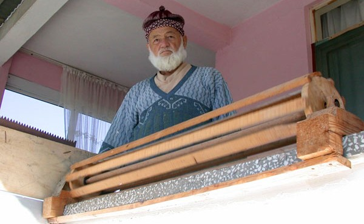
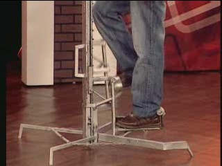

87 ayrý parçasý ve "en az" 115 iþleviyle dünyaca ünlü "Ýsviçre Ordu Çakýsý" Guinness rekorlar kitabýna girdi.
Çakýyý üreten Ýsviçre'nin Delemont kentindeki Wenger (www.wenger.ch) firmasý yetkililerinin bildirdiðine göre, 1,4 kg aðýrlýðýnda, 8x22 cm ebatlarýnda yeni, çok aðýr ve cep için "artýk büyük" bu çaký, bisiklet jant teli ayarýndan golf sopasý temizliðine, bahçe çiçekleri bakýmýndan balýk pulu temizliðine kadar en az 115 iþlevi yerine getiriyor.
Çakýnýn lazerle iþaretleme ve büyüteç iþlevi bile var... (Büyük boy resim için týklayýnýz) Bu ürünle ilgili daha fazla bilgi bulunan Firma web sayfasý için týklayýnýz
Çift aðýzlý cam sürahi...
Ergonomik cam bardak
Poþet çay sýkacaðý
Güçlendirilmiþ motorlu diþ fýrçasý!..
Balkonuna atlayan kedilerden býkýnca, kedisavar icat etti! 
Kaynak: Duran Savaþ, Salih Hamurcu - Sakarya CHA (17-Ekim-2007)
Sakarya'nýn Arifiye beldesinde oturan 80 yaþýndaki Hasan Yýldýz'ýn kedilerle baþý dertteydi. Ne yaptýysa kedilerle baþ edemedi. Ýki katlý evinin ikinci katýnýn balkonuna atlayan ve etrafý kirleten kedilerden kurtulmanýn yolunu yine kendisi buldu. Marangozluk yaparak geçimini saðlayan Yýldýz, geliþtirdiði bir düzenekle kedilerin balkona atlamasýný önledi.
Yýldýz, 'kedisavar' adýný koyduðu buluþunu þöyle anlattý: "Özellikle akþamlarý çok sayýda kedi balkona atlýyordu. Sabaha kadar balkonda bulunan kanepelerde yatýyor, etrafý pisletiyorlardý. Ayrýca eve de giriyorlardý. Ne yaptýysam balkona atlamalarýna mani olamadým. Kedilere nasýl engel olabilirim diye düþündüm. Döner çarka benzer 1,5 metre uzunluðundaki bu aleti geliþtirdim. Kedilerin balkona atlayabildiði yere bu aleti koydum. Zaten kediler balkonun yaklaþýk 1,5 metre uzunluðundaki kýsmýndan atlýyorlardý. Kediler merdivenden çýkýp balkona atlamasý için bu çarka tutunmalarý gerekiyor. Kedi atlýyor, ayaðý çarka deðer deðmez çark dönüyor ve kedi geri düþüyor. Bir kaç denemeden sonra balkona atlayamayacaðýný anlayýnca vazgeçiyor. Kedilerden ancak bu þekilde kurtulduk. Balkon kapýsýndan da girmemesi için oraya da týrtýklý bir aparat koydum."
En sýradýþý Türk Mucit Yarýþmasý finalistleri:
NTV tarafýndan, Türk Patent Enstitüsü ve Türk Telekom'un katkýlarýyla Türkiye çapýnda ilk defa düzenlenen Türk Mucit Buluþ Yarýþmasý'nda (www.turkmucit.tv) finale kalan buluþlardan 4'üne ait kýsa video görüntüleri aþaðýda verilmiþtir. Birbirinden ilginç ve sýradýþý bu videolara ait resimlerin üzerindeki linki týklayarak videoyu seyredebilir ve/veya bilgisayarýnýza indirebilirsiniz.
Not: Bu yarýþmanýn finali 22 Haziran 2007 tarihinde yapýlmýþtýr.

Urfa Merdiveni, Murat Nural
Dar yerlerde çalýþmaya uygun, basamaðý olmayan, portatif merdiven.
Kaynak Gözlüðü, Ýbrahim Benzeyen
Çene hereketiyle açýlýp kapanabilen kaynak gözlüðü.
Verkaç Þanzýman, Hasan Kum
Etkin kasnak çaplarý ve aktarým oraný kademesiz deðiþtirilebilir...
Oynar kafalý matkap, Nesimi Yeþilbað
Oynar kafalý (universal) el matkabý.